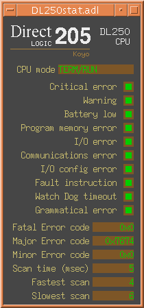

This document describes the EPICS device support for Automation Direct PLCs connected through a serial port using asynDriver.
Other Automation Direct PLCs which provide a DirectNet slave port might also work, but these have not been explored.
If you are already familiar with the directNetMpf or directNetBug support applications, the main differences you should be aware of are documented in these sections:
Release 1-0 of the software has been built with EPICS base R3.14.7, although it should build with R3.14.6 and possibly against earlier versions too. It was designed and tested against asynDriver R4-0, and should work with all newer R4 versions as well.
This software can act as a DirectNet Master through any asynOctal serial port. It should be possible to drive several PLCs from a single RS422 line, but this configuration has not been tested. See the DirectNet documentation for information on network design considerations. To achieve the highest data throughput between the IOC and more than one PLC it is recommended that a separate serial line be used for each PLC, rather than connecting multiple PLCs through the same line.
The PLC must be configured to use the DirectNet protocol on the port to which ASYN is to be connected; communication will not be established otherwise. The serial format for Port 1 of the DL250 CPU is fixed (by the PLC) to be 9600 baud, 8 bits, odd parity, although the format of the second serial port can be modified as required. The serial format used by a local ASYN port is defined in the IOC's startup file st.cmd, whereas that of a remote port through a terminal server such as the Moxa NPort 5210 must be configured on the remote device itself.
For safety reasons, the device support only allows the IOC database to write to a 512 word = 1024 byte region of the PLC's address map, locations V2000 to V2777. The IOC can only change a PLC output if the PLC is scanning a ladder logic program to validate the data in this area and copy it to the hardware outputs desired. There is no equivalent restriction on reading any location in the PLC memory map, thus digital inputs can be addressed directly by binary input records and so on.
The PLC program must communicate with the IOC in binary, which may require additional programming steps as the PLC arithmetic is often performed with BCD numbers. This software does not support conversions to or from BCD, nor can it yet understand data in the PLC's Double or Floating Point formats.
Some ladder logic code is required to support the reading of ADC inputs by the IOC - see the DL205 Analog I/O Modules manual for details. If the ADC readings are just for communication to the IOC then it is recommended that the multiplexing method be used, without the BCD conversion rung; the pointer method performs automatic conversion to BCD and would need extra rungs to convert the readings back to binary for use by the IOC.
This software is a support application maintained in the EPICS CVS respository at modules/plc/directNetAsyn, and is published as a tar file on the EPICS Modules Download page. Installation is in two parts:
The instructions in this section will have to be carried out by a suitably priviledged person before the software can be correctly used within IOC applications. To install the software:
% cd /usr/local/iocapps/R3.14.7/modules % mkdir plc; cd plc % gnutar xfz directNetAsyn1-0.tar.gz
% cd directNetAsyn1-0/configure % vi RELEASE
% cd .. % gnumake
An IOC applications developer who needs to use this DirectNet device support must make the following changes to the application concerned:
DIRECTNETASYN=$(SUPPORT)/directNetAsyn1-0
include "devDnAsyn.dbd"
myioc_LIBS += directNetAsyn asyn
The directNet slave ID must match the setting configured in the PLC.createDnAsynPLC "PLCname", ID, "port"
The device type (DTYP) field of a PLC record should be set to "DirectNet PLC via ASYN". The basic INP or OUT record hardware address is an Instrument I/O type and comprises a string which starts with an @ character followed by the name of the PLC being addressed. This name must have been registered with the IOC using createDnAsynPLC in the startup file. Note that although the name may contain spaces this is not recommended, and that upper case letters are regarded as different to lower case in the name.
The name must be followed by a space, and the remaining string is examined by the device support for the corresponding address within the PLC. This address can be specified in the same way it would be given to the PLC programming software DirectSoft. The following table details the address types available. Note that just as when programming the PLC, all addresses and bit numbers must be given in octal, a leading zero being unnecessary (this address format is identical to that used by the directNetMpf driver, the only change required to convert records is to modify their DTYP string).
Address Range Description Size X0 - X777 Input point Bit Y0 - Y777 Output point Bit C0 - C1777 Control relay Bit SP0 - SP777 Special relay Bit T0 - T377 Timer status bit Bit TA0 - TA377 Timer current value Word CT0 - CT177 Counter status bit Bit CTA0 - CTA177 Counter current value Word V0 - V41237 Data word Word B0.0 - B41237.15 Bit of data word Bit S0 - S1777 Stage bit Bit
Device support is split into two separate modules, input records and output records.
All input records share a common read data cache, to reduce the amount of DirectNet traffic which could otherwise be generated by multiple reads of the same or nearby locations. When an input record is processed and the device support layer is asked to read the hardware, the data currently in the cache for the relevent location is examined. The scan period of the record is compared to the age of the cached data. If the cache data is old (ie was received more than half a scan period ago) then a read request is sent to the PLC for new data, but otherwise the cache data is returned immediately.
Up to 16 words (32 bytes) will be read from the PLC from each request, so if any nearby locations are used then these data may be collected as well. Note that this cache size is larger than the 6 word/12 byte limit of the directNetBug support, thus the definition of "nearby" is different and the grouping of particular I/O locations will change. A record which has SCAN="I/O Intr" will be processed automatically whenever new data is available as a result of read requests made by other records (at least one record in the "local group" must get processed for this to work though).
Support is provided for the following input record types:
Reads from a single bit at the given PLC address. This is ideal for reading X inputs, monitoring Y outputs, timer status bits or control relays, or for any of the special purpose relays or bits in the PLC.
Reads up to 16 bits at the given hardware address. The bit pattern cannot cross a 16-bit word boundary, but may start anywhere within the PLC data word. This restriction applies to the bit address types too; for example an input address of X17 (octal = 15 decimal) should not be specified with NOBT=2. The current implementation will silently return zero values for all bits beyond the MSB of the word addressed.
As mbbi.
Reads a whole word from the given memory location. Any bit offsets in the hardware address will be silently ignored. The use of Linear input conversion (LINR="LINEAR") is not recommended, but Slope conversion (LINR="SLOPE") may be used by setting the record's EOFF and ESLO fields. Values read by an IOC must be stored in the PLC memory location as binary numbers, not as BCD. Also note that the ADC input modules available for the 205 series PLCs cannot be addressed directly without some intermediate ladder logic to de-multiplex the channels (see 2.3 PLC Setup).
Output record types have only a restricted range of PLC memory which they can address. This range does not include any of the PLC output space, just an area of general data storage from V02000 to V02777. The application designer must be careful to ensure that memory words written to by the PLC ladder logic are not also the destination of PLC output records, as the smallest writable object is a word. The IOC maintains its own buffer of the values in each output location which allows several records to point to different bits or bit ranges within the same V-memory location and for the correct combined output to be send to the PLC, although every record processing will result in a separate write request to the PLC. Note that there is no link between this output buffer and the read data cache described above for input records, other than via the PLC's memory.
Support is currently provided for the following output record types:
Writes to a single bit at the given hardware address.
Writes to up to 16 bits at the given hardware address. The bit pattern cannot cross a 16-bit word boundary, but may be placed anywhere within the PLC data word. This restriction applies to the bit address types too; for example an output address of X17 (octal = 15 decimal) cannot be specified with NOBT=2. The current implementation will silently discard any bits beyond the MSB of the word addressed.
As mbbo.
Writes a whole word to the given memory location. Any bit offsets in the hardware address will be silently ignored. The use of Linear output conversion (LINR="LINEAR" etc.) is not recommended but Slope conversion (LINR="SLOPE") may be used by setting the record's EOFF and ESLO fields. The value placed in the PLC memory is in a binary format, not BCD. The ladder logic which is required to drive a DAC is described in the "DL205 Analog I/O Modules" manual from Automation Direct.
If a communication with the PLC via ASYN fails, the record which caused the transaction to occur will be set into an alarm state. If the error is with the serial communication between ASYN and the PLC then the alarm severity used is INVALID_ALARM; if the error occurs within the IOC to ASYN communication path the severity MAJOR_ALARM is used. The alarm status will indicate WRITE_ALARM or READ_ALARM as appropriate.
Two kinds of interaction are possible within a running IOC. The standard EPICS dbior I/O Report provides running status information collected from normal device support operations, and a program has been written that provides interactive read/write access to the PLC's memory via directNet operations.
Device support report functions are provided which allow the current status of the read and write data caches to be studied. Different interest levels result in different reports being printed. The following table defines the information given for each interest level:
Interest
LevelInformation Displayed 0 Addresses of connected PLCs 1 Communication statistics counters 2 Read & write cache summaries 3 Read cache buffer contents 4 Read cache record addressing
To access these status reports, use the standard dbior command at the vxWorks or IOC shell prompt. Without any parameters this produces interest level 0 information:
epics> dbior
Driver: drvAsyn
serials8n4-1 multiDevice:No canBlock:Yes autoConnect:Yes
enabled:Yes connected:Yes numberConnects 1
nDevices 0 nQueued 0 lockCount 0
exceptionActive: No exceptionUsers 12 exceptionNotifys 0
interposeInterfaceList
asynOctet pinterface 0x40055d00 drvPvt 0x8096750
interfaceList
asynCommon pinterface 0x40055760 drvPvt 0x8056a20
asynOctet pinterface 0x40055780 drvPvt 0x8056a20
Calling asynCommon.report
Port serials8n4:4001: Connected
Driver: drvDnAsyn
PLC "test" via ASYN port "serials8n4-1" with DirectNet ID 1
Device Support: devBiDnAsyn
Device Support: devBoDnAsyn
For higher interest levels two parameters are required. The first is a driver or device support table name in double-quotes, and the second is the report interest level. The table name parameter can be given as an empty string to get the report for all device and driver support layers:
ioctest> dbior "",1
Driver: drvAsyn
serials8n4-1 multiDevice:No canBlock:Yes autoConnect:Yes
enabled:Yes connected:Yes numberConnects 1
nDevices 0 nQueued 0 lockCount 0
exceptionActive: No exceptionUsers 12 exceptionNotifys 0
interposeInterfaceList
asynOctet pinterface 0x40055d00 drvPvt 0x8096750
interfaceList
asynCommon pinterface 0x40055760 drvPvt 0x8056a20
asynOctet pinterface 0x40055780 drvPvt 0x8056a20
Calling asynCommon.report
Port serials8n4:4001: Connected
fd: 10
Characters written: 11134
Characters read: 11120
Driver: drvDnAsyn
PLC "test" via ASYN port "serials8n4-1" with DirectNet ID 1
alarm = 0, nRdReqs = 511, nWrReqs = 0
nSuccess = 505, nDnFail = 1, nAsynFail = 5
Device Support: devBiDnAsyn
Device Support: devBoDnAsyn
In the level 1 report above, alarm indicates the alarm severity from the most recent communication with this PLC. nRdReqs and nWrReqs are the number of bitbus requests sent out for reading and writing respectively. nSuccess gives the number of responses with no errors; nDnFail counts any errors reported from the directNet protocol, and nAsynFail any reported in the ASYN communications path.
epics> dbior "",2
Driver: drvAsyn
serials8n4-1 multiDevice:No canBlock:Yes autoConnect:Yes
enabled:Yes connected:Yes numberConnects 1
nDevices 0 nQueued 0 lockCount 0
exceptionActive: No exceptionUsers 12 exceptionNotifys 0
interposeInterfaceList
asynOctet pinterface 0x40055d00 drvPvt 0x8096750
interfaceList
asynCommon pinterface 0x40055760 drvPvt 0x8056a20
asynOctet pinterface 0x40055780 drvPvt 0x8056a20
Calling asynCommon.report
Port serials8n4:4001: Connected
fd: 10
Characters written: 12322
Characters read: 12316
Driver: drvDnAsyn
Device Support: devBiDnAsyn
PLC "test" via ASYN port "serials8n4-1" with DirectNet ID 1
RdCache for V2000 - V2000 last updated at <undefined>
RdCache for V7751 - V7765 last updated at 2005-04-07 16:53:43.419840
RdCache for V7775 - V7777 last updated at 2005-04-07 16:53:37.196329
RdCache for V41200 - V41202 last updated at 2005-04-07 16:53:43.521602
RdCache for V40400 - V40400 last updated at <undefined>
Device Support: devBoDnAsyn
PLC "test" via ASYN port "serials8n4-1" with DirectNet ID 1
WrCache for V2000 - V2777 starts at 0x4040f3c8
Note that the same cache is used for all input record types, but only the bi device support provides a report function to avoid duplicate information being printed. The same is true of output record types, although much less information is stored in the device tables so the report outputs are much shorter.
Interest levels 3 and 4 provide more detail about the values in the read cache buffer, and the input records which use each buffer.
The interactive program DNI can be used to connect to a registered PLC and perform memory and I/O dumps and also modify PLC locations. This is started by typing DNI followed by the registered PLC name (which must be in double-quotes from the vxWorks shell):
epics> DNI "DL250" DirectNet Interaction program Connected to PLC "DL250" on ASYN port "dnAsyn0", DirectNet ID 1 Enter a command, ? gives help DNI:DL250>
The help command ? lists most of the available commands:
DNI:DL250> ?
The DNI commands available are:
? [cmd] - Display help [on cmd]
c <plcName> - Connect to PLC <plcName>
d <addr> [n] - Display PLC data at <addr>
m <addr> - Modify PLC data at <addr>
q - Quit DNI
r - Print database I/O Report for all PLCs
s - Get PLC communications status
<addr> is a PLC data type followed by the address, eg V02000
[n] is an optional element count
Type '? d' for a list of address types supported
Note that the unprotect command (see below) is not shown to prevent casual users from making changes to PLC variables that are not normally writable by the IOC.
The command c can be used to connect to a different PLC without having to leave DNI:
DNI:DL250> c PLC2 Connected to PLC "PLC2" on ASYN port "dnAsyn1", DirectNet ID 1 DNI:PLC2>
See how the PLC currently connected to is shown in the new command prompt.
The display command d takes an address and an optional number of elements and shows the current value of those locations in the PLC:
DNI:DL250> d V7750 027 V07750: 0000 0000 0000 0000 0000 0000 0000 0000 V07760: 0000 0000 0000 0000 0000 30DF 0034 0053 V07770: 0003 0001 0006 0009 0000 0004 0002 DNI:DL250> d X0 X000: 1 1 1 0 0 1 0 1 0 0 0 0 0 0 0 0 X020: 0 0 0 0 0 0 0 0 DNI:DL250>
Many different kinds of address can be used, and the output format reflects the kind of data to which the address refers - where the address is of an input, output or status bit the display uses binary digits, otherwise hexadecimal is used. For a full list of the available address types and the valid range, ask for help on the d command thus:
DNI:DL250> ? d
The 'd' can command dump the contents of various PLC locations.
Valid DL250 PLC address types and ranges are:
V-memory V00000 - V41237
Counter value CTA000 - CTA177
Counter status CT000 - CT177
Control relay C0000 - C1777
Special relay SP000 - SP777
Stage status S0000 - S1777
Timer value TA000 - TA377
Timer status T000 - T377
Digital input X000 - X777
Digital output Y000 - Y777
Ladder program L0000 - L1DFF
Scratchpad Z0000 - Z5101
L and Z addresses are in hex, other addresses in octal.
Word data values are output in hex, Bit data in binary.
V-memory locations can be modified using the m command, which takes an address argument, displays the current location contents and prompts for a new data value:
DNI:DL250> m 2000
V02000: 0x0004 > ?
The 'm' command modifies VMEM locations so addr must be octal.
Data values from the PLC are displayed in hex.
At the '>' prompt, a number entry (with leading 0 or 0x for octal
or hex values respectively) will be written back to the location,
or the following subcommands can be used:
^ - Set direction backwards (decreasing addresses)
= - Set direction stationary (same address)
v - Set direction forwards (increasing addresses)
- - Move to preceeding address (direction setting is ignored)
+ - Move to following address (direction setting is ignored)
? - Prints this help message
. - Quit (unrecognized commands also quit)
V02000: 0x0004 > 0x1234
V02001: 0x0002 > ^
V02000: 0x1234 >
End of unprotected area
DNI:DL250>
Pressing return without entering a number will move onto the next location in the current direction without writing anything back to the previous location. The subcommands can be given on their own, or immediately after a value to be written to the current location. Setting the direction to be stationary makes it easy to monitor the value in a single location. The m command exits when the current address runs beyond the protected V-memory range V2000 thru V2777.
It is possible to change memory outside of the protected range by first giving the unprotect command:
DNI:DL250> unprotect VMEM Write protection is OFF DNI:DL250> m V40500 V40500: 0x0010 > 0x30= V40500: 0x0030 > . DNI:DL250> u VMEM Write protection is ON
The remaining commands provide additional PLC status information. The command r gives the standard EPICS Database I/O report for all registered PLCs:
DNI:DL250> r
PLC "DL250" via ASYN port "dnAsyn0" with DirectNet ID 1
alarm = 0, nRdReqs = 2040, nWrReqs = 0
nSuccess = 2040, nDnFail = 0, nAsynFail = 0
PLC "PLC2" via ASYN port "dnAsyn1" with DirectNet ID 1
alarm = 0, nRdReqs = 40, nWrReqs = 0
nSuccess = 40, nDnFail = 0, nAsynFail = 0
The s command requests and displays some communications statistics from the PLC. If the number of erroneous communications or retries rises significantly there may be problems with the RS232 line to the PLC:
DNI:DL250> s
Last error code: 0x00
Prev error code: 0x00
Successful comms: 7797
Erroneous comms: 0
Header retries: 0
Data retries: 0
A PLC does not have to be in RUN mode for DirectNet communication to work, thus it is possible for the IOC to read and report the current run state of the PLC. An example database template and some MEDM screens are provided for the DL250 CPU to demonstrate this, and these can be used in applications if desired. They utilise the CPU special relays which are described in Appendix D of the DL205 User Manual. The error codes in Appendix B may also be a useful reference.
The status database can be found in the db subdirectory of the support application, named DL250stat.db. It contains 28 records which scan the CPU's special relays (bi records) and system memory locations (ai records) relating to its run state and error flags. The record names all start with `$(name):', and their INP fields with `@$(plc) '. Records will enter an alarm state in the event of the PLC indicating errors. The following records are provided:
Record Name Scan Description Notes $(name):SP11 5 second Forced run mode $(name):SP12 I/O Intr Terminal run mode $(name):SP13 I/O Intr Test run mode $(name):SP15 I/O Intr Test program mode $(name):SP16 I/O Intr Terminal program mode $(name):SP17 I/O Intr Forced stop mode $(name):mode I/O Intr CPU mode mbbi giving run mode as text $(name):SP40 5 second Critical error $(name):SP41 I/O Intr Warning $(name):SP43 I/O Intr Battery low $(name):SP44 I/O Intr Program memory error $(name):SP45 I/O Intr I/O error $(name):SP46 I/O Intr Communications error $(name):SP47 I/O Intr I/O config error $(name):SP50 I/O Intr Fault instruction $(name):SP51 I/O Intr Watch Dog timeout $(name):SP52 I/O Intr Grammatical error $(name):V7751 5 second FAULT error code Scan disabled by SP50 $(name):V7752 10 second Correct module ID Scan disabled by SP47 $(name):V7753 10 second Incorrect module ID Scan disabled by SP47 $(name):V7754 10 second Configuration Base & Slot Scan disabled by SP47 $(name):V7755 5 second Fatal Error code $(name):V7756 5 second Major Error code $(name):V7757 5 second Minor Error code $(name):V7765 10 second Scan count $(name):V7775 10 second Scan time (msec) $(name):V7776 10 second Fastest scan $(name):V7777 10 second Slowest scan
An MEDM display associated with the above database is installed into the adl subdirectory (this file is identical to the equivalently named display provided with the directNetBug support). DL250stat.adl expects a name macro to be defined exactly as in the database, and displays some of the critical PLC information from the associated records:
